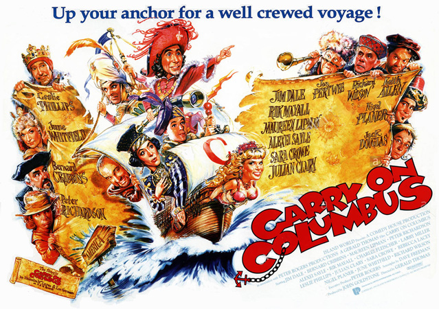
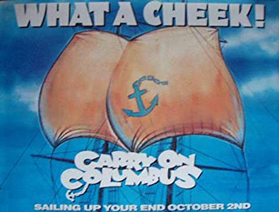
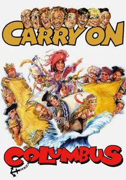

John Goldstone & Peter Rogers
Filming dates: 21 April – 27 May 1992.
Interiors: Pinewood Studios, Buckinghamshire.
Exteriors: Frensham Common. This location was previously used nearly 30 years earlier for the similarly nautical Carry On Jack.
Original Carry On performer Frankie Howerd was signed up to appear, but he died shortly before he was due to film his role. His part as the King of Spain was offered to original series regular Bernard Bresslaw, who turned it down. Leslie Phillips eventually took on the role, playing opposite June Whitfield as the Queen, a role turned down by both Joan Sims and Barbara Windsor.
Veteran Carry On performer Kenneth Connor was offered a cameo role in the film but he turned it down, saying: ‘I want to be remembered as a Carry On star, not a Carry On bit player’.
The producers managed to persuade a number of alternative comedians such as Peter Richardson, Alexei Sayle, Rik Mayall, Julian Clary and Nigel Planer, all of whom except Clary are from the Comic Strip, to appear in the film.
This was the last film that Gerald Thomas directed: he died on 9 November 1993.
The final film of the series of Carry On films to be made; it was a belated entry to the series, following 1978's Carry On Emmannuelle. It was produced to coincide with the 500th anniversary of Christopher Columbus' discovery of the Americas.
The film was panned by many critics. Michael Dwyer in The Irish Times described it as a "flaccid, feeble comeback effort" and a "wretched and pathetic attempt which is singularly unfunny". However, Carry On Columbus took more money at the UK box office than the two other Columbus films released in 1992, Christopher Columbus: The Discovery and 1492: Conquest of Paradise, although all three films flopped. Carry On Columbus was also shot on a much lower budget than the other two films, a budget of £2.5 million compared to the other two budgets of $45 million and $47 million respectively.
In a 2004 poll of British film actors, technicians, writers and directors on British cinema, Carry On Columbus was voted the worst British film ever.
The Whippit Inn - "So what went wrong? Well numerous factors came into play. The script was rushed and wasn't funny (Dave Freeman would go on to admit this. Although he was only given two weeks to write it). The old regulars and newcomers don't really work well together especially Jim Dale and Peter Richardson. The old regulars, with the exception of Jim Dale don't really get a look in (Jon Pertwee in a 'blink and you'll miss him' appearance is shockingly wasted). Finally, a great deal of the cast are miscast; Alexi Sayle, Peter Richardson and especially Maureen Lipman all put in shocking performances.
There are good bits to the film. The opening music by John du Prez is fantastic and the first half of the film isn't too bad. Indeed the opening scene with Rik Mayall is very good and makes you wonder why he doesn't appear in the rest of the picture. But as a whole, the film certainly isn't up to scratch, which was a shame, as on paper it looked like it might just have worked."

